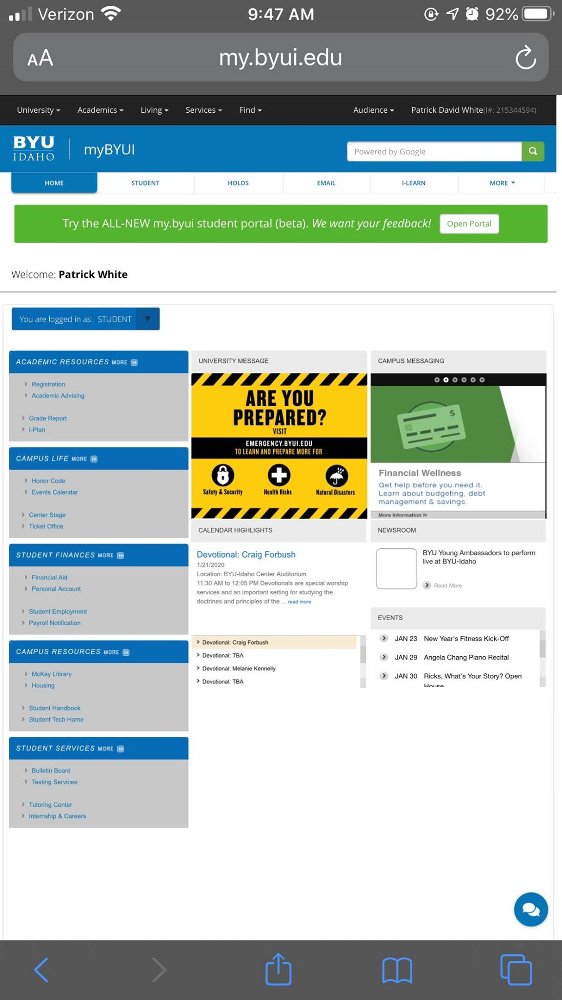

The ByuI homepage displays the rule of thirds with the three colums of links that are sperated to specific options for student, University messages and Campus messages. This arrangement of the links makes it easier to find the necessary links for students to navigate the website.
The Disney+ page is a great example of white space. First off it has a background picture to capture the users attention yet there is not to much detail within the picture, as the picture fades out we start to see details of what a subscription with Disney+ will get you along with a price and a link to get you to a page to sign up. Within the whole page, there is a great deal of space and thought that make the page seem really simple yet complex at the same time. This page uses white space along with a visual hierarchy.

The Steam store page starts with a few distinct areas. On of the first things that can be noticed is the Orange advertisement for a game that is now available. This is an advertisement for a new game and with the colors of the gamer and the size of the advertisement it capture the eye immediately. The next thing that is noticed is the navigation links to different pages within the website, along with a search bar to look up specific products on the store. Then, lastly you notice the logo and name of the website. The steam store page is designed for advertisement and uses the Visual Hierarchy to sell new products.